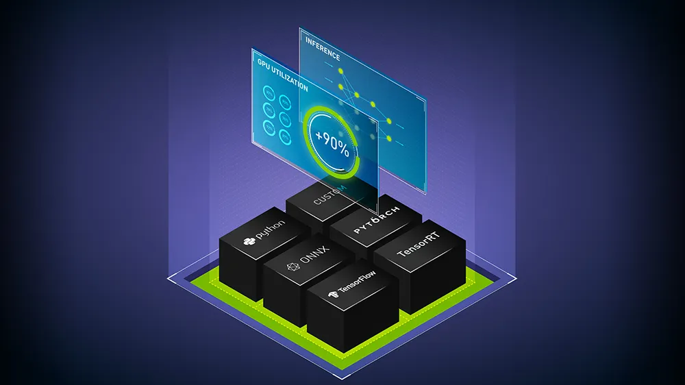
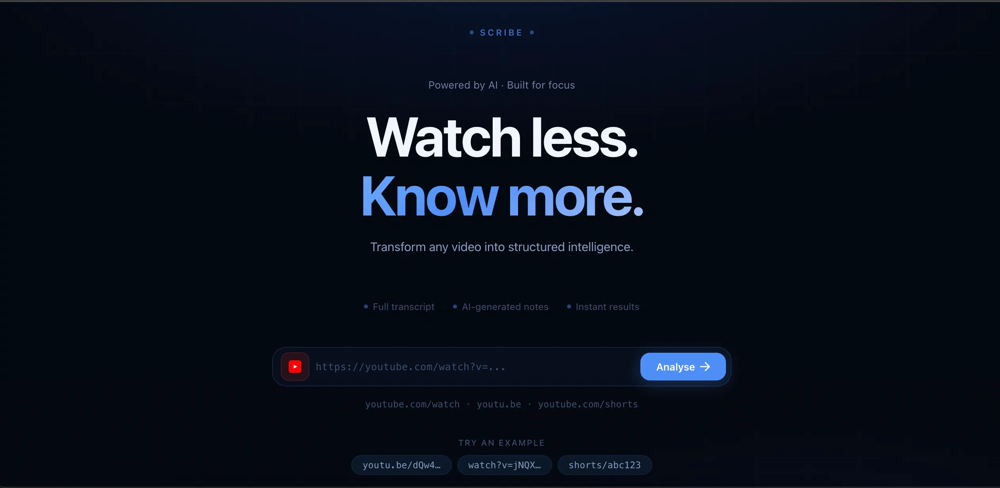

Turning pixels
into intelligence
I'm a Computer Vision & Machine Learning Engineer with a deep focus on building production-grade AI systems that operate at scale. From managing 4,000+ camera feeds to reducing computational overhead, I engineer solutions that are both technically rigorous and practically impactful.
Tech Stack


Where I've
made an impact
- Contributed to the flagship low-code platform powering city-scale surveillance across highways, parks, and streets with automated incident detection and real-time alerting.
- Architected multiple microservices enabling seamless one-click deployment of CV use cases across distributed edge devices.
- Managed high-throughput model inference using Triton Inference Server, supporting 24×7 concurrent camera streaming across large deployments.
- Built a dynamic multi-accelerator AI inference orchestration service converting models into optimised engines for NVIDIA and Qualcomm hardware.
- Designed inference architecture processing real-time video feeds from 4,000+ cameras across heterogeneous edge devices.
- Optimised end-to-end inference pipeline, achieving ~70% reduction in computational overhead.
- Built user-configurable CV Use Nodes (Detection, Annotation, Classification, Alerting) enabling rapid workflow customisation.
- Engineered data pipelines and trained CV models for city surveillance tasks including entry/exit monitoring and access alerting.
- Worked on building a POC for a Digital Avatar solution using lip-sync with controlled facial expressions and voice cloning, mainly used for training and onboarding content across industries
- Experimented with open-source lip-sync models like Wav2Lip and improved the inference pipeline by introducing batching and caching. This reduced memory usage by 50% and made it possible to process longer videos smoothly..
- Evaluated multiple TTS and voice cloning models, including BARK and ElevenLabs, based on audio quality and inference time to select optimal solutions.
- Built AI-driven content generation tools using GPT-3.5 Turbo to create personalised scripts, integrating database queries and external APIs for contextual content.
- Collaborated with the Business team to deliver demo solutions for use cases such as client onboarding, employee training and personalised customer engagement.
- Constructed a Proof of Concept (POC) for real-time person Re-identification and multi-camera tracking, designed to enhance surveillance coverage in retail environments.
- Engineered a highly precise model boasting a 98% precision rate, significantly slashing False Positives by 30%.
- Streamlined algorithmic performance for enhanced speed and efficiency, reducing frame computation by 50%, leveraging advanced techniques such as multi-threading for seamless parallel processing.
Things I write
about

Why Companies End Up Using Triton Inference Server — A Simple Case Study
A deep-dive into why Triton Inference Server has become the go-to choice for production ML inference — exploring real bottlenecks, benchmarks, and the engineering trade-offs companies face when scaling model serving.
How Model Format Alone Can Cut Your AI Infrastructure Cost by 70%
Learn how choosing the right model format can dramatically reduce inference costs, memory consumption, and deployment complexity without changing the underlying model architecture.

Transforming Video into Knowledge — High-Traceability AI Learning Pipeline
In the EdTech and Learning Management System (LMS) sectors, video content is king. However, traditional video has a fundamental limitation: it is inherently unstructured, linear, and difficult to navigate.
Let's build
something together
Whether it's an exciting AI opportunity, a collaboration, or just a chat about inference systems — my inbox is always open.
pranaysaha61@gmail.com